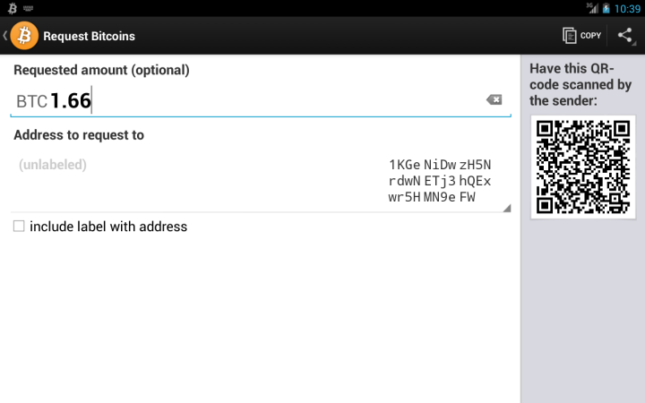

What is currency?
Currency refers to the fact or quality of being generally accepted or in use. Specifically, the term is synonymous with money in any form that is used or circulated as a viable medium of exchange.
What is Bitcoin?
Bitcoin is the world’s first decentralized digital currency that relies on cryptography to provide instantaneous peer-to-peer transactions anywhere in the world. Satoshi Nakamoto published the specification for the open-source platform in 2009. Bitcoin’s design is public, nobody owns or controls the virtual currency, and everyone can take part in its development and use.
Why are people going nuts about Bitcoin?
There are many advantages to Bitcoin. Its transactions require no bank or clearing house approval. It can be used anywhere as long as you have internet access. Your Bitcoin account cannot be frozen as a result of governmental action. And there are no prerequisites or arbitrary limits associated with opening and maintaining a Bitcoin account.
How do I start using Bitcoin?
Download a Bitcoin wallet! A Bitcoin wallet allows you to transact with other users and gives you ownership of a balance with which you can send and receive Bitcoins. You can install a Bitcoin wallet on your phone, tablet, and/or computer. Desktop wallets give you complete control over your wallet, but you are responsible for protecting your money and performing backups. Mobile wallets allow you to bring Bitcoin with you on-the-go. Web-based wallets allow you to use Bitcoin on any browser or mobile and may provide additional services and support as well.
Once you have your Bitcoin wallet installed, it will generate your first Bitcoin address. You can let your friends know of your Bitcoin address so they can pay you and vice versa. It is like how email works, but Bitcoin addresses are only meant to be used once. Don’t worry, you can always generate another Bitcoin addresses when you need it.
How does a Bitcoin transaction work?
The Bitcoin network relies on the block chain, a shared public ledger that includes all confirmed transactions. Users rely on the block chain to calculate their Bitcoin balance and to verify new transactions. Cryptography is employed to enforce the integrity and chronology of the block chain.
A Bitcoin transaction involves a transfer of values between Bitcoin wallets that gets included in the block chain. Bitcoin wallets maintain a private key used to sign transactions, providing mathematical proof that they have come from the owner of the wallet. The signature also prevents transactions from being altered by anyone else once they have been issued.

How are Bitcoin transactions processed?
Bitcoin transactions are processed through mining, which involves utilizing computer hardware to do mathematical calculations for the Bitcoin network. These calculations are used to confirm waiting transactions that get included in the block chain.
Confirmation means that a transaction has been processed and is highly unlikely to be reversible. In order for a transaction to be confirmed, transactions must be packed into a block that fits very strict cryptographic rules, which must then be verified by the network.
As a reward, Bitcoin miners can collect transaction fees, as well as newly created Bitcoins, for their efforts. Bitcoin mining is a specialized and competitive market where miners are rewarded in proportion to the amount of work they’ve done. Not all Bitcoin users are Bitcoin miners. In fact, the mining market has become quite saturated as Bitcoin prices continue to surge.